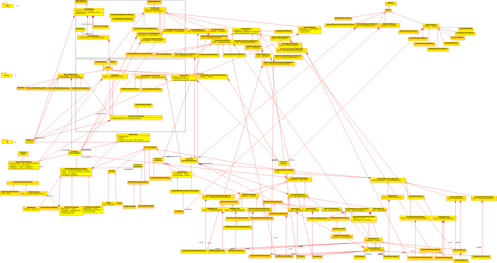

Architecture considerations¶
Dependencies¶
Several dependencies are needed in order to build the GUI:
CMake >=3.13
OpenTURNS >=1.21
otfmi >=0.14 (optional, for FMI support)
otmorris >=0.14 (optional, for Morris support)
Qt >=5
Qwt >=6
Python >=3.5
SWIG >=3
Boost.locale/filesystem
SalomeYACS (optional, for YACS support)
Sphinx >=1.8 (optional, for doc)
Numpydoc >=0.9 (optional, for doc)
ParaView >=5.8 (optional, for visualization)
Compilation¶
git clone https://git.phimeca.com/ot-edf/otgui.git persalys
cd persalys
mkdir -p build && cd build
cmake \
-DCMAKE_INSTALL_PREFIX=$PWD/install \
-DOpenTURNS_DIR=$PWD/../../openturns/build/install/lib/cmake/openturns \
-DParaView_DIR=$PWD/../../paraview/build/install/lib/cmake/paraview \
-DOTMORRIS_DIR=$PWD/../../otmorris/build/install/lib/cmake/otmorris \
..
make install
To run it:
persalys.sh
Translation¶
lupdate -verbose lib/ -ts translations/persalys_fr.ts -no-obsolete
linguist translations/persalys_fr.ts
Python console menu translation:
lupdate -verbose lib/src/view/PyConsole/ -ts lib/src/view/PyConsole/resources/PyConsole_msg_fr.ts -no-obsolete
linguist lib/src/view/PyConsole/resources/PyConsole_msg_fr.ts
publish PyConsole_msg_fr.qm in translations/
Source code structure¶

The GUI classes are organized by 3 layers: I0, I1, V0. This layered organization is reflected in the sources with three different folders and their associated sub-libraries.
Here is the global class diagram for each layer:
